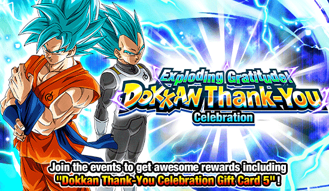
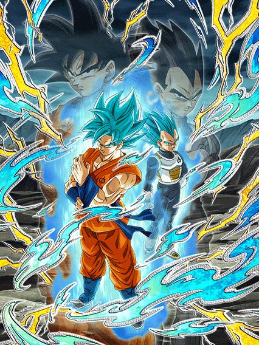
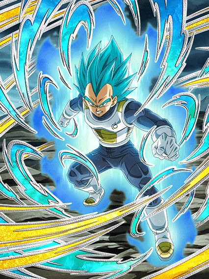
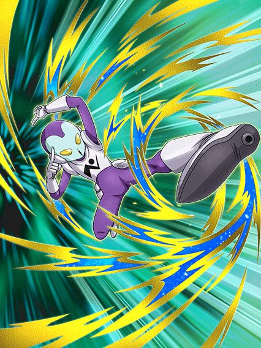
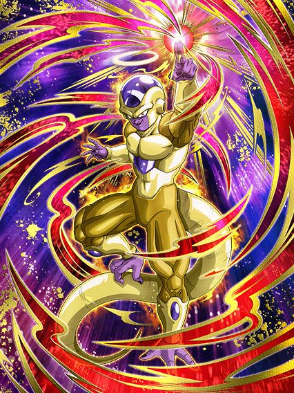
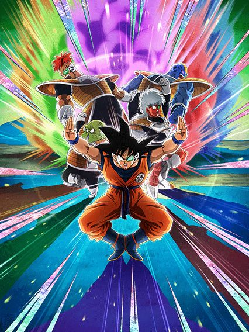
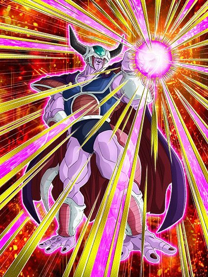
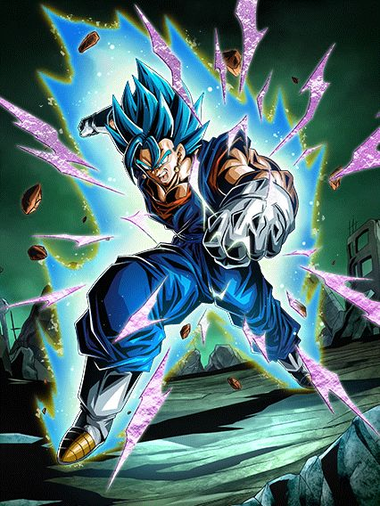

Finalmente, é hora. VAMBORA VEGETA E TR-
Bom, era pra eles lançarem aqui, mas o Dokkan teve outros planos 💀

Eu sinceramente acho que deveria ser ilegal existir um card tão maneiro mas tão mid.
É genuinamente triste oq aconteceu com esses caras, slk
Bom, o Goku tem uma intro que dá 50% de chance de lançar um Super Attack adicional por 3 turnos.. que é decente
Esse cara builda 100% de ATK e DEF atacando 4 vezes.. mas mesmo buildado e nas melhores condições possíveis, ele não tem nada que o proteja de bosses poderosos, é literalmente só isso
Ele tmb stacka 30% de ATK no Super, que é legal já que ele tem o adicional e tals
Mas ainda sim o dano dele tende a ser bem baixo.. nada de muito especial
Em geral, essa é uma forma base bem sem graça, já que ele só tem dano e defesa e ambos são baixos, ele só é bonito mesmo
Bom, a partir do turno 4 vc pode trocar pro Vegeta.. aí fica meio interessante

Ele é bom por 3 turnos, aproveite.
O Vegeta literalmente se baseia inteiro em rainbow orbs
Com 1 orb, ele ganha 100% de ATK e DEF
Com 3 orbs, ele ganha +50% de DEF
E cada orb rainbow dá 25% de chance de crítico, podendo chegar a 100% com 4 orbs
Até aí é até de boa, mas aí vc percebe que ele aleatoriamente muda orbs pra rainbow por só 3 turnos
Faça uma revisão básica do card que você entende o problema
Já que o Vegeta é restrito a 3 turnos, ele é pra ser um card que finalize a luta, mas como o Goku é bem mediano e até frágil, você normalmente deveria trocar pro Vegeta o mais rápido possível, mas aí é um problema pq-
Card contraditório. Você entendeu.
Esses caras tem um visual brabo, animações aceitáveis, OSTs brabas, artes brabas.. pq foram zuar logo o kit deles?

A arte desse cara parece aquelas artes antigas de 2016, não sei pq.
Bom, esse cara é um card desvia-ou-morre bem direto
No slot 1 ele tem 70% de chance de desvio, e nos slots 2 e 3 ele tem só 50%
Ele até builda 80% de ATK e DEF com 4 desvios mas isso realmente não faz diferença
Se ele desviar, tá sendo útil, e se não, é só mais um card pra odiar xd
Fato aleatório: O ID desse cara no jogo é um número bem mais baixo que o normal, então acho q ele realmente era um card antigo q reutilizaram.

"Hmmm.. nosso personagem tem uma coisa zuada no kit
Ele debuffa os aliados tmb.. como devemos prosseguir no EZA dele?"
"Ué, deixa lá kkkkkkkkkkkk"
Esse cara é um card de dano genérico que debuffa o boss E OS ALIADOS
O cara simplesmente tira 7% de ATK de personagens super class, dando um debuff incancelável no time todo, que legal
Mas ele realmente é só um card que dá dano e tem uma defesa ok. EZA bem mediano
Junta isso com o fato de que Representatives of Umiverse 7 é um time quase morto e que o Freeza não tem Big Bad Bosses e você tem um card essencialmente inútil
Parabéns.

Mas oq q isso uhh.. quer saber? Eu não vou nem questionar.
Esses caras são um ótimo suporte assim como a contraparte PHY deles
Tenha um time full Ginyu Force e eles irão ter a passiva completa e dar 59% de ATK e DEF pra geral, suporte muito bom
Eles não são nada desbalanceado, mas é sempre bom ter buffs pra Ginyu Force né, ainda mais pro Ginyu AGL GOAT

Ele tem debuffs.
Esse cara tem alguns debuffs no kit e ainda é um suporte pra Wicked Bloodline, bem decente
Única coisa é que ele precisa ter um Freeza no turno pra ter 100% de DEF a mais (acredite, ele precisa)
Ter um Freeza ou um inimigo Pure Saiyans ou Hybrid Saiyans também dá pra ele 30% de chance de selar o super deles
Sim, 30%...
Não tem jeito, personagem F2P é personagem F2P

Que bom que ele já veio buffado pro Global.
Para os não-sabidos, esse cara lançou no JP com um kit bem fraco e zuado, tava tão ruim que ouviram as reclamações dos players e buffaram o EZA, ainda bem.
Bom, o Vegetto se resume a atacar várias e várias vezes pra buildar a passiva
Ele builda 50% de ATK e DEF atacando 5 vezes, e ele stacka 20% de ATK e DEF no Super Attack dele
E falando nisso, ele lança um adicional com 50% de chance de ser um Super caso vc faça um Ultra Super Attack, que é bem fácil
Em geral, é só isso mesmo
É um EZA super simples, mas uma coisa útil dele é que a Leader Skill dele foi buffada pra dar 120% pra todos Super Class, e isso é maravilhoso, muito útil pra eventos que precisam de personagem F2P.
Você chegou ao fim dessa página!
Obrigado por ler tudo, e fica a vontade pra ver outras